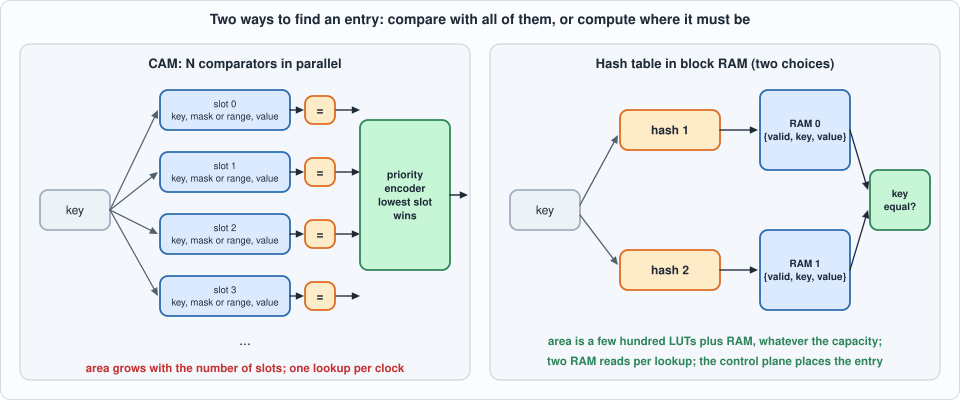
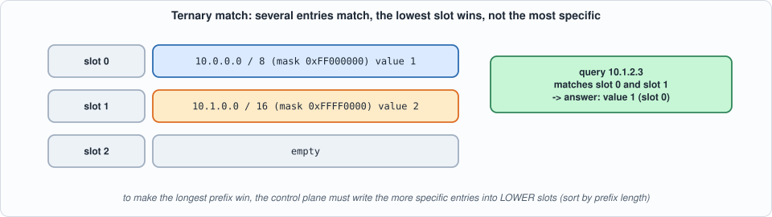
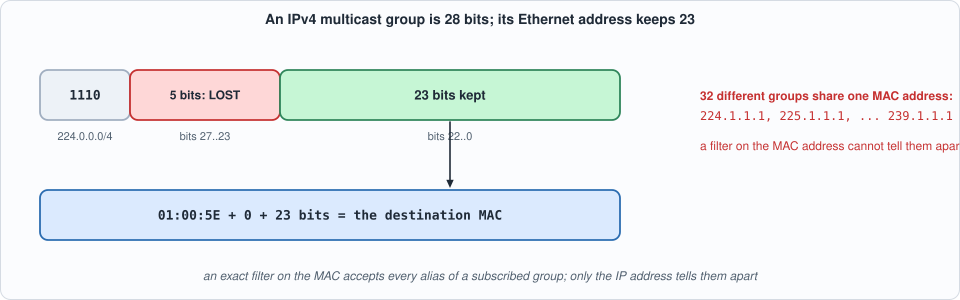
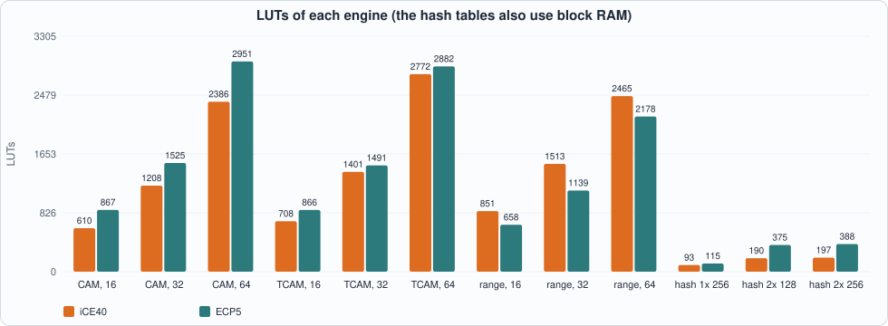
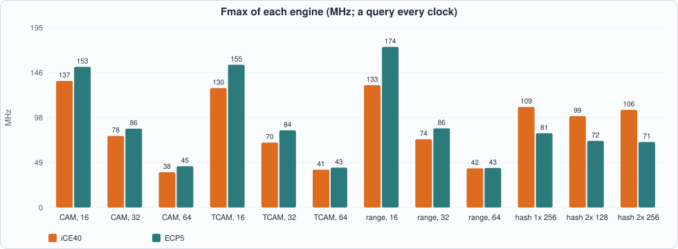
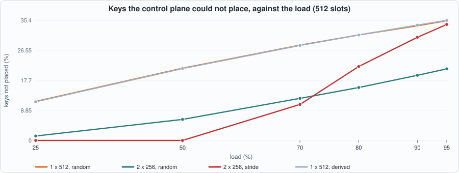
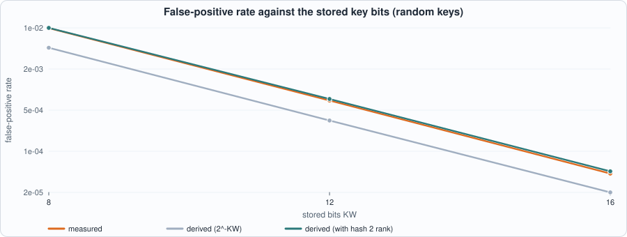

10. Match Engines: CAM, Ternary CAM, Range Matcher and Hash Tables, What Each Costs, and Where a Cheap Hash Fails¶
About the kestrels in this picture
- Lesser kestrel (Falco naumanni) breeds in colonies in Mediterranean Europe and Central Asia and migrates to Africa for the winter. It feeds largely on large insects and nests in cavities in old buildings and cliffs.
- Mauritius kestrel (Falco punctatus) lives only on the island of Mauritius. By the mid-1970s only a handful of wild birds were known (the figure usually quoted is four); captive breeding and release programmes brought the population back to hundreds.
The scene is imaginary and the birds are stylised drawings.
What you will see: four ways to answer "which entry, if any, matches this key?" behind one interface and one latency: an exact CAM (content-addressable memory: every entry compared with the key in one clock), a ternary CAM (each entry has a mask: prefixes and wildcards), a range matcher (for port ranges), and a hash table in block RAM with one or two choices of slot and an optional key fingerprint. One model and one testbench serve all four; the chapter then measures what each costs, how a table of the cheap hash behaves as it fills, and why a filter on a multicast MAC address cannot tell 32 groups apart.
What you need to know first: Chapter 5 (block-RAM read styles) and Chapter 9 (the header filter whose destination address and port rule this chapter generalises). No knowledge of CAMs is assumed.
What this chapter builds: rtl/match.sv (match_cam with three modes, hash_tab), model/match_gold.py (the specification, the hash control plane and the stimulus), tb/match_tb.sv, and tools/ch10_run.py, tools/ch10_example_a.py, tools/ch10_example_b.py, tools/mut_ch10.py.
Scope
Keys are 32 bits and values 8 bits (a port number or a bitmap of subscribers). Tables are small: up to 64 CAM slots and 512 hash slots, the sizes at which the open flow places the designs in minutes. Wider keys (a 48-bit MAC address, an IPv6 address) change the cost, not the structure. Update safety (changing a table while traffic flows without a wrong answer in between) is addressed only to the extent that a query sees exactly the writes of earlier cycles; a shadow-table swap is Exercise 4. Hash entries are never moved after insertion (cuckoo hashing, Exercise 2).
The interface¶
All engines have the same pins, so that anything built on one can use another.
- Query:
q_valid,q_key. The result comes two cycles later:r_valid,r_hit,r_val. One query per cycle, no stall. - Write:
w_en,w_sel(which table, hash engines),w_addr(the slot),w_key,w_aux,w_val,w_vld(0 deletes). The engine only stores: software decides where an entry goes (for a CAM the slot number is the priority; for a hash table the control plane knows the hash and places the key). - Ordering: a query sees every write issued in an earlier cycle and none issued later, whatever stage of its two-cycle pipeline it is in. One operation per cycle.
- Don't-cares: the data inputs are ignored when
q_validorw_enis low;r_hitandr_valare ignored whenr_validis low.
The CAM family¶
match_cam keeps N slots in registers and compares the key with all of them in one cycle.
- Mode 0, exact: the slot's key equals the query.
- Mode 1, ternary (TCAM):
w_auxis a mask: a 1 bit means "this bit of the key must match", a 0 bit means "don't care".10.0.0.0/8is the key0x0A000000with mask0xFF000000. The bits of the stored key outside the mask are not required to be zero. - Mode 2, range: the low 16 bits of the key must lie in
[lo, hi](w_aux[15:0]andw_aux[31:16]). A slot withlo > hinever matches.
Several slots may match; the lowest slot number wins. That is the whole priority rule, and it is not "longest prefix first": the control plane must write the more specific entries into lower slots.

Figure 10.1: compare with every entry, or compute where the entry must be.
Figure 10.2: the lowest slot wins, whatever the prefix length.Stage 1 registers the N match bits. Stage 2 finds the lowest set bit and reads that slot's value, in the cycle after the compare. A write in that cycle takes effect at its end, so the older query still sees the old value, which is the ordering rule above. (Yosys maps the value array to one block RAM: it sees an array read with a registered output.)
The hash table¶
hash_tab stores {valid, key, value} in block RAM. With one table a key lives at slot hash1(key). With two tables (two-choice hashing) it may live at hash1(key) in table 0 or hash2(key) in table 1, and both are read in the same cycle. A lookup compares the stored key with the query. The hash is deliberately cheap: fold is the XOR of the key's AW-bit chunks; the second hash is fold of the key rotated left by 13 and XORed with the key shifted right by 5.
With KW below 32 the slot stores only the low KW bits of the key, a fingerprint. The table then answers "hit" for some keys that were never inserted (false positives) but never "miss" for one that was; that is a filter, in the sense of a Bloom filter, with a smaller slot.
// verilator lint_off DECLFILENAME
// verilator lint_off UNUSEDSIGNAL
// Chapter 10: match engines. Every engine answers the same question, "which entry, if any, matches this key?", through the same pins and with the same latency, so that one testbench and one model serve all of them:
// query : q_valid, q_key (32 bits). Result: r_valid TWO cycles later, r_hit, r_val (8 bits; 0 on a miss).
// write : w_en, w_sel (which table, hash engines only), w_addr (the slot), w_key, w_aux, w_val, w_vld (0 deletes the slot). The control plane (software) decides WHERE an entry goes; the hardware only stores it.
// One operation per cycle. A query sees every write issued in an EARLIER cycle (and none issued later), whatever the pipeline stage it is in.
// The data inputs are don't-cares when q_valid / w_en is low and are ignored; r_hit and r_val are don't-cares when r_valid is low.
//
// match_cam: N entries in registers, all compared with the key in ONE cycle. MODE 0 = exact match on w_key; MODE 1 = ternary (TCAM): a bit of w_aux set means "this bit of the key must match", clear means don't care; MODE 2 = range: the low 16 bits of the key must lie in [w_aux[15:0], w_aux[31:16]] (an empty range, lo > hi, never matches). Several entries may match: the LOWEST slot number wins (priority). Stage 1 registers the N match bits; stage 2 picks the lowest and reads its value, which is read in the cycle after the compare: a write in that cycle takes effect at its end, so the older query still sees the old value. N must be a power of two.
module match_cam #(parameter int N = 16, parameter int MODE = 0) (
input logic clk, input logic rst,
input logic q_valid, input logic [31:0] q_key,
input logic w_en, input logic w_sel, input logic [11:0] w_addr, input logic [31:0] w_key, input logic [31:0] w_aux, input logic [7:0] w_val, input logic w_vld,
output logic r_valid, output logic r_hit, output logic [7:0] r_val);
localparam int IW = $clog2(N);
logic [31:0] k [0:N-1]; logic [31:0] a [0:N-1]; logic [7:0] v [0:N-1]; logic [N-1:0] vld, hv, hv_r; logic qv_r;
always_comb begin
for (int i = 0; i < N; i++) begin
case (MODE)
0: hv[i] = vld[i] && (k[i] == q_key);
1: hv[i] = vld[i] && (((k[i] ^ q_key) & a[i]) == 32'd0);
default: hv[i] = vld[i] && (q_key[15:0] >= a[i][15:0]) && (q_key[15:0] <= a[i][31:16]);
endcase
end
end
always_ff @(posedge clk) begin
if (w_en) begin k[w_addr[IW-1:0]] <= w_key; a[w_addr[IW-1:0]] <= w_aux; v[w_addr[IW-1:0]] <= w_val; end
if (rst) vld <= '0; else if (w_en) vld[w_addr[IW-1:0]] <= w_vld;
hv_r <= hv; qv_r <= q_valid && !rst;
end
logic found; logic [IW-1:0] idx;
always_comb begin
found = 1'b0; idx = '0;
for (int i = N - 1; i >= 0; i--) if (hv_r[i]) begin found = 1'b1; idx = IW'(i); end // the last assignment is the lowest index
end
always_ff @(posedge clk) begin r_valid <= qv_r; r_hit <= found; r_val <= found ? v[idx] : 8'd0; end
endmodule
// hash_tab: an exact-match table in block RAM. CH = 1: one table of 2^AW slots, indexed by hash 1 of the key. CH = 2: two tables of 2^AW slots, indexed by hash 1 and hash 2, BOTH read in the same cycle (two-choice hashing: an entry may live in either). Each slot holds {valid, the low KW bits of the key, value}: KW = 32 is exact; KW < 32 stores only a FINGERPRINT of the key, which makes the table a filter that can answer "hit" for a key that was never inserted (a false positive) but never "miss" for one that was.
// The hash is the XOR of the key's AW-bit chunks (fold); hash 2 is the same fold of the key rotated left by 13 and XORed with the key shifted right by 5. Cheap in logic, and the chapter measures where it is good and where it is not. Stage 1 reads the RAM(s) (the key is held for one cycle); stage 2 compares and registers the result.
module hash_tab #(parameter int AW = 8, parameter int CH = 2, parameter int KW = 32) (
input logic clk, input logic rst,
input logic q_valid, input logic [31:0] q_key,
input logic w_en, input logic w_sel, input logic [11:0] w_addr, input logic [31:0] w_key, input logic [31:0] w_aux, input logic [7:0] w_val, input logic w_vld,
output logic r_valid, output logic r_hit, output logic [7:0] r_val);
localparam int EW = 1 + KW + 8;
function automatic logic [AW-1:0] fold(input logic [31:0] x);
logic [AW-1:0] s; s = '0;
for (int i = 0; i < 32; i += AW) s = s ^ AW'(x >> i);
fold = s;
endfunction
logic [EW-1:0] m0 [0:(1 << AW) - 1]; logic [EW-1:0] m1 [0:(1 << AW) - 1]; logic [EW-1:0] r0, r1; logic [31:0] qk; logic qv; logic [AW-1:0] h1, h2;
assign h1 = fold(q_key);
assign h2 = fold({q_key[18:0], q_key[31:19]} ^ {5'd0, q_key[31:5]});
always_ff @(posedge clk) begin
if (w_en && !w_sel) m0[w_addr[AW-1:0]] <= {w_vld, w_key[KW-1:0], w_val};
r0 <= m0[h1];
end
if (CH == 2) begin : g2
always_ff @(posedge clk) begin
if (w_en && w_sel) m1[w_addr[AW-1:0]] <= {w_vld, w_key[KW-1:0], w_val};
r1 <= m1[h2];
end
end else begin : g1
assign r1 = '0;
end
always_ff @(posedge clk) begin qk <= q_key; qv <= q_valid && !rst; end
logic hit0, hit1;
assign hit0 = r0[EW-1] && (r0[EW-2:8] == qk[KW-1:0]);
assign hit1 = (CH == 2) && r1[EW-1] && (r1[EW-2:8] == qk[KW-1:0]);
always_ff @(posedge clk) begin r_valid <= qv; r_hit <= hit0 || hit1; r_val <= hit0 ? r0[7:0] : hit1 ? r1[7:0] : 8'd0; end
endmodule
The model and the control plane¶
model/match_gold.py holds the specification of each engine and the control plane of the hash engines (HashPlane): it knows both hashes, places each key in the first free slot it has (table 0, then table 1), remembers where each key is, and deletes by clearing the slot. A key it cannot place is simply absent from the set, and the hardware must say miss for it: so insert can fail, and the failure rate is a property of the hash and the load, measured in Example B. For KW = 32 the model asserts that the structure's answer equals plain set membership.
#!/usr/bin/env python3
"""Chapter 10: the specification of the match engines and the control plane that fills the hash tables.
CAM-like engines (exact, ternary, range): a list of N slots; a query returns the LOWEST valid slot that matches. Hash engines: the specification is a SET of keys with values; the control plane (HashPlane below) decides which slot each key goes to (it knows the hash), and a key it could not place is simply absent from the set: the hardware must say "miss" for it. With a stored fingerprint (KW < 32) the structure may also answer "hit" for keys never inserted; `HashPlane.lookup` emulates the structure for that case and the measured false-positive rate is reported against the set.
Stimulus lines (see tb/match_tb.sv): type(0 idle,1 write,2 query) sel addr key aux val vld."""
import random
M32 = 0xFFFFFFFF
def rotl13(k): return ((k << 13) | (k >> 19)) & M32
def fold(x, aw):
s = 0
for i in range(0, 32, aw): s ^= (x >> i) & ((1 << aw) - 1)
return s
def h1(k, aw): return fold(k, aw)
def h2(k, aw): return fold(rotl13(k) ^ (k >> 5), aw)
EXACT, TERNARY, RANGE = 0, 1, 2
def cam_match(mode, e, q):
key, aux, val, vld = e
if not vld: return False
if mode == EXACT: return key == q
if mode == TERNARY: return ((key ^ q) & aux) == 0
return (aux & 0xFFFF) <= (q & 0xFFFF) <= (aux >> 16)
def cam_lookup(mode, entries, q):
for e in entries:
if e and cam_match(mode, e, q): return (1, e[2])
return (0, 0)
def line(t, sel=0, addr=0, key=0, aux=0, val=0, vld=0): return f"{t:x}{sel:x}{addr:04x}{key:08x}{aux:08x}{val:02x}{vld:x}"
def junk(rng): return line(0, rng.getrandbits(1), rng.getrandbits(12), rng.getrandbits(32), rng.getrandbits(32), rng.getrandbits(8), rng.getrandbits(1))
def write_stim(path, lines):
with open(path, "w") as f: f.write("\n".join(lines) + "\n")
return len(lines)
def cam_ops(seed, mode, n, nops=700, idle=15, clear=True):
"""-> (lines, expected). Writes, deletes and queries interleaved; every query's expected result is computed against the slots as they are at that point of the sequence. Overlapping entries (ternary, range) test the priority. Queries also use keys of entries that have been deleted or overwritten (they must miss). With clear=False the slots are not cleared by writes and the engine must come out of reset empty."""
rng = random.Random(seed * 7919 + mode); ent = [None] * n; lines = []; exp = []; dead = []
pool = [rng.getrandbits(32) for _ in range(6)] # a small pool of keys so that exact entries collide, and queries hit more than one slot
def mk():
val = rng.getrandbits(8)
if mode == EXACT: return (rng.choice(pool) if rng.random() < .4 else rng.getrandbits(32), rng.getrandbits(32), val, 1)
if mode == TERNARY:
p = rng.choice([0, 1, 8, 16, 24, 31, 32, rng.randint(0, 32)]); mask = (M32 << (32 - p)) & M32 if rng.random() < .7 else rng.getrandbits(32)
return (rng.getrandbits(32), mask, val, 1) # key bits outside the mask are random: the hardware must not need them cleared
lo = rng.choice([0, 1, 80, 443, 1024, 65535, rng.getrandbits(16)]); hi = rng.choice([lo, lo + 1, lo + rng.randint(0, 3000), 65535, rng.getrandbits(16)]) & 0xFFFF
if rng.random() < .85 and hi < lo: lo, hi = hi, lo # a few empty ranges are left in
return (rng.getrandbits(32), lo | (hi << 16), val, 1)
def query():
live = [e for e in ent if e and e[3]]
if dead and rng.random() < .2: e = rng.choice(dead); return (e[0] if mode != RANGE else (rng.getrandbits(16) << 16) | (e[1] & 0xFFFF)) if mode != TERNARY else ((e[0] & e[1]) | (rng.getrandbits(32) & ~e[1] & M32))
if live and rng.random() < .65:
e = rng.choice(live); key, aux = e[0], e[1]
if mode == EXACT: q = key if rng.random() < .8 else key ^ (1 << rng.choice([0, 31, rng.randrange(32)]))
elif mode == TERNARY:
q = (key & aux) | (rng.getrandbits(32) & ~aux & M32) # any bits where the mask does not care
care = [i for i in range(32) if (aux >> i) & 1]
if care and rng.random() < .3: q ^= 1 << rng.choice([min(care), max(care), rng.choice(care)]) # a near miss on a bit the mask cares about, the extreme ones included
else:
lo, hi = aux & 0xFFFF, aux >> 16; q = (rng.getrandbits(16) << 16) | (rng.choice([lo, hi, (lo - 1) & 0xFFFF, (hi + 1) & 0xFFFF, (lo + hi) // 2, rng.getrandbits(16)]))
return q & M32
return rng.getrandbits(32) if mode != RANGE else rng.getrandbits(32)
if not clear:
for q in (0, 0, M32): lines.append(line(2, 0, 0, q, 0, 0, 0)); exp.append((0, 0)) # straight after reset every slot must be empty (the testbench powers the registers up with garbage)
if clear:
for a in range(n): lines.append(line(1, 0, a, 0, 0, 0, 0)) # clear every slot (the CAM also clears itself in reset; the hash tables need this)
for _ in range(nops):
while rng.randrange(100) < idle: lines.append(junk(rng))
r = rng.random()
if r < .30:
a = rng.randrange(n); e = mk()
if ent[a]: dead.append(ent[a])
ent[a] = e; lines.append(line(1, 0, a, e[0], e[1], e[2], 1))
elif r < .38:
a = rng.randrange(n); old = ent[a]
if old: dead.append(old)
ent[a] = None # deleting clears the valid bit only; half the time the old key stays in the slot, as when software just flips the flag
lines.append(line(1, 0, a, old[0], old[1], old[2], 0) if (old and rng.random() < .5) else line(1, 0, a, rng.getrandbits(32), rng.getrandbits(32), rng.getrandbits(8), 0))
else:
q = query(); lines.append(line(2, 0, 0, q, rng.getrandbits(32), rng.getrandbits(8), rng.getrandbits(1))); exp.append(cam_lookup(mode, ent, q))
return lines, exp
class HashPlane:
"""The control plane of a hash engine: knows both hashes, places keys, remembers where they are. insert() returns the write lines to issue and whether it succeeded."""
def __init__(self, aw, ch, kw=32):
self.aw, self.ch, self.kw = aw, ch, kw; self.slot = [dict() for _ in range(ch)]; self.where = {}; self.val = {}
def idx(self, sel, k): return h1(k, self.aw) if sel == 0 else h2(k, self.aw)
def clear_lines(self): return [line(1, s, a, 0, 0, 0, 0) for s in range(self.ch) for a in range(1 << self.aw)]
def insert(self, k, v):
if k in self.where: s, a = self.where[k]; self.val[k] = v; return [line(1, s, a, k, 0, v, 1)], True # update in place
for s in range(self.ch):
a = self.idx(s, k)
if a not in self.slot[s]: self.slot[s][a] = k; self.where[k] = (s, a); self.val[k] = v; return [line(1, s, a, k, 0, v, 1)], True
return [], False
def delete(self, k):
s, a = self.where.pop(k); del self.slot[s][a]; del self.val[k]; return [line(1, s, a, 0, 0, 0, 0)]
def lookup(self, q):
"""The structure's answer for key q (a fingerprint compare when kw < 32)."""
m = (1 << self.kw) - 1
for s in range(self.ch):
a = self.idx(s, q)
if a in self.slot[s] and (self.slot[s][a] & m) == (q & m): return (1, self.val[self.slot[s][a]])
return (0, 0)
def load(self): return len(self.where) / (self.ch << self.aw)
def keys_of(kind, rng, n):
"""kind: random 32-bit keys; seq (consecutive, a subnet); mcast (IPv4 multicast group addresses 224.0.0.0/4); stride (multiples of 2**12: a typical aligned allocation)."""
out = set()
base = rng.getrandbits(32) & ~0xFF
while len(out) < n:
i = len(out)
if kind == "random": out.add(rng.getrandbits(32))
elif kind == "seq": out.add((base + i) & M32)
elif kind == "mcast": out.add(0xE0000000 | rng.getrandbits(28))
elif kind == "stride": out.add((i << 12) & M32)
else: raise ValueError(kind)
return sorted(out) if kind in ("seq", "stride") else list(out)
def hash_ops(seed, aw, ch, kw, nmem, kind="random", nq=500, churn=True, idle=15):
"""-> (lines, expected, stats). Clear, insert nmem keys, query, delete 25% and insert new ones, query again. Expected results come from the structure's emulation (== the key set when kw = 32: asserted)."""
rng = random.Random(seed * 104729 + aw * 7 + ch); hp = HashPlane(aw, ch, kw); lines = hp.clear_lines(); exp = []; fails = 0; mem = keys_of(kind, rng, nmem + nmem // 3 + 4); first, extra = mem[:nmem], mem[nmem:]
vals = {}
for k in first:
v = rng.getrandbits(8); w, ok = hp.insert(k, v); lines += w; fails += not ok
def queries(n):
nonlocal lines
pool_in = list(hp.where); pool_all = first + extra
for _ in range(n):
while rng.randrange(100) < idle: lines.append(junk(rng))
r = rng.random(); q = rng.choice(pool_in) if (r < .4 and pool_in) else (rng.choice(pool_all) if r < .6 else rng.getrandbits(32))
if r >= .8 and pool_in: # a key that hashes to the same bucket of table 0 as a member (two bits that fold onto each other differ) but is not the member
i = rng.randrange(32 - aw); q = rng.choice(pool_in) ^ (1 << i) ^ (1 << (i + aw))
lines.append(line(2, 0, 0, q, rng.getrandbits(32), rng.getrandbits(8), rng.getrandbits(1))); e = hp.lookup(q); exp.append(e)
if kw == 32: assert e == ((1, hp.val[q]) if q in hp.where else (0, 0))
queries(nq)
if churn:
for k in rng.sample(list(hp.where), max(1, len(hp.where) // 4)): lines += hp.delete(k)
for k in extra:
v = rng.getrandbits(8); w, ok = hp.insert(k, v); lines += w; fails += not ok
queries(nq)
return lines, exp, dict(placed=len(hp.where), failed=fails, load=hp.load())
if __name__ == "__main__":
# a hand-checked case: ternary 10.0.0.0/8 then 10.1.0.0/16 at a LATER slot: the lowest slot wins even if the later one is more specific
e = [(0x0A000000, 0xFF000000, 1, 1), (0x0A010000, 0xFFFF0000, 2, 1), None]
assert cam_lookup(TERNARY, e, 0x0A010203) == (1, 1) and cam_lookup(TERNARY, e, 0x0B000000) == (0, 0)
assert cam_lookup(RANGE, [(0, 80 | (90 << 16), 7, 1)], 80) == (1, 7) and cam_lookup(RANGE, [(0, 80 | (90 << 16), 7, 1)], 91) == (0, 0) and cam_lookup(RANGE, [(0, 90 | (80 << 16), 7, 1)], 85) == (0, 0)
assert fold(0x12345678, 8) == 0x12 ^ 0x34 ^ 0x56 ^ 0x78 and fold(0xFFFFFFFF, 12) == (0xFFF ^ 0xFFF ^ 0xFF)
for m in (0, 1, 2): lines, exp = cam_ops(1, m, 16); print("cam mode", m, len(lines), "cycles", len(exp), "queries,", sum(h for h, _ in exp), "hits")
for kind in ("random", "seq", "mcast", "stride"):
lines, exp, st = hash_ops(1, 6, 2, 32, 90, kind, 200); print("hash", kind, st, sum(h for h, _ in exp), "hits of", len(exp))
print("model self-test passed")
The tests¶
The stimulus is one operation per cycle: idle (carrying random junk on every field), write, or query. For the CAMs the stream mixes writes, deletes and queries; a query's expected result is taken from the slots as they are at that point of the sequence. Queries are chosen to be hard: keys of live entries, keys of entries that were deleted (the old key stays in the slot half the time, as when software only clears a flag), near misses that differ in one bit the mask cares about (the lowest, the highest, a random one), the edges of a range (lo, hi, lo - 1, hi + 1), and, for the hash tables, bucket collisions (a key that hashes to a member's bucket and is not the member). Half of the CAM runs skip the clearing writes and begin with queries straight after reset, with the testbench having powered every register up with garbage (every slot valid), so that only the reset can empty the CAM.
// Chapter 10 testbench for the match engines: replays out/match_stim.hex, one operation per cycle: type (0 idle, 1 write, 2 query), sel, addr, key, aux, val, vld (25 hex digits). Idle cycles carry random junk on every field (a don't-care must be ignored). Prints `RES <hit> <val>` for each result (val is 0 on a miss), `LAT` (cycles from the first query to its result) and `DONE`. Defines: NC (cycles), ENG (0 exact CAM, 1 TCAM, 2 range, 3 hash with one table, 4 hash with two tables), N (CAM entries), AW (hash address bits), KW (stored key bits).
`timescale 1ns/1ps
`ifndef NC
`define NC 1000
`endif
`ifndef ENG
`define ENG 0
`endif
`ifndef N
`define N 16
`endif
`ifndef AW
`define AW 8
`endif
`ifndef KW
`define KW 32
`endif
module match_tb;
localparam int NC = `NC;
logic clk = 0, rst = 1, q_valid = 0, w_en = 0, w_sel = 0, w_vld = 0; logic [31:0] q_key = '0, w_key = '0, w_aux = '0; logic [11:0] w_addr = '0; logic [7:0] w_val = '0; logic r_valid, r_hit; logic [7:0] r_val;
logic [99:0] vec [0:NC-1]; int k, nres = 0, cyc = 0, first_q = -1, first_r = -1;
if (`ENG < 3) begin : gc
match_cam #(.N(`N), .MODE(`ENG)) dut (.clk(clk), .rst(rst), .q_valid(q_valid), .q_key(q_key), .w_en(w_en), .w_sel(w_sel), .w_addr(w_addr), .w_key(w_key), .w_aux(w_aux), .w_val(w_val), .w_vld(w_vld), .r_valid(r_valid), .r_hit(r_hit), .r_val(r_val));
end else begin : gh
hash_tab #(.AW(`AW), .CH(`ENG - 2), .KW(`KW)) dut (.clk(clk), .rst(rst), .q_valid(q_valid), .q_key(q_key), .w_en(w_en), .w_sel(w_sel), .w_addr(w_addr), .w_key(w_key), .w_aux(w_aux), .w_val(w_val), .w_vld(w_vld), .r_valid(r_valid), .r_hit(r_hit), .r_val(r_val));
end
if (`ENG < 3) begin : gi
initial begin gc.dut.vld = '1; for (int i = 0; i < `N; i++) begin gc.dut.k[i] = 32'd0; gc.dut.a[i] = 32'd0; gc.dut.v[i] = 8'h5A; end end // power-up garbage: every slot looks valid; only the reset can empty the CAM
end
always #4 clk = ~clk;
always @(posedge clk) begin
cyc <= cyc + 1; if (q_valid && !rst && first_q < 0) first_q = cyc;
if (r_valid) begin $display("RES %0d %0d", r_hit, r_val); nres++; if (first_r < 0) first_r = cyc; end
end
initial begin
$readmemh("out/match_stim.hex", vec);
q_valid = 1; w_en = 1; repeat (3) @(negedge clk); rst = 0; q_valid = 0; w_en = 0; // valid inputs during reset: reset must discard them (the queries; the writes are the model's business)
for (k = 0; k < NC; k++) begin
@(negedge clk);
q_valid = (vec[k][99:96] == 4'd2); w_en = (vec[k][99:96] == 4'd1); w_sel = vec[k][92]; w_addr = vec[k][87:76]; q_key = vec[k][75:44]; w_key = vec[k][75:44]; w_aux = vec[k][43:12]; w_val = vec[k][11:4]; w_vld = vec[k][0];
end
@(negedge clk); q_valid = 0; w_en = 0; repeat (6) @(negedge clk); $display("LAT %0d", first_r - first_q); $display("DONE %0d results", nres); $finish;
end
endmodule
#!/usr/bin/env python3
"""Chapter 10: the running designs. (1) lint; (2) the model's hand-checked cases; (3) the three CAM engines (exact, ternary, range) against the specification: 3 modes x 3 sizes x 6 seeds in Icarus, one run each in Verilator; (4) the hash engines (one and two tables, exact and fingerprint) against the control plane's structure, four key types; (5) latency and one query per cycle; (6) multicast: the 28-bit group id against the 23 bits a MAC address keeps. Usage: ch10_run.py"""
import os, random, re, subprocess, sys
sys.path.insert(0, os.path.dirname(os.path.abspath(__file__))); sys.path.insert(0, os.path.join(os.path.dirname(os.path.abspath(__file__)), "..", "model"))
import flow, match_gold as g
R = flow.ROOT; F = ["rtl/match.sv", "tb/match_tb.sv"]; NM = ["exact CAM", "ternary CAM", "range matcher"]
def res(o): return [(int(a), int(b)) for a, b in re.findall(r"RES (\d+) (\d+)", o)]
def run(lines, eng, sim="icarus", **kw):
n = g.write_stim(os.path.join(R, "out", "match_stim.hex"), lines); d = (f"NC={n}", f"ENG={eng}") + tuple(f"{k}={v}" for k, v in kw.items()); f = flow.sim_icarus if sim == "icarus" else flow.sim_verilator
return f(F, "match_tb", defines=d)[1]
if __name__ == "__main__":
print("== 1. lint gate (Verilator -Wall --lint-only, Yosys 'check')")
for top in ("match_cam", "hash_tab"):
p = subprocess.run(["verilator", "--lint-only", "-Wall", "--top-module", top, "rtl/match.sv"], cwd=R, capture_output=True, text=True); w = [l for l in (p.stdout + p.stderr).splitlines() if l.startswith("%Warning")]
y = subprocess.run(["yosys", "-p", f"read_verilog -sv rtl/match.sv; hierarchy -top {top}; proc; opt_clean; check"], cwd=R, capture_output=True, text=True).stdout
print(f" {top:10s} Verilator warnings: {len(w)} Yosys check problems: {len([l for l in y.splitlines() if 'Found and reported' in l and ' 0 problems' not in l])}")
e = [(0x0A000000, 0xFF000000, 1, 1), (0x0A010000, 0xFFFF0000, 2, 1), None]
print("\n== 2. the model's hand-checked cases (priority and the range edges)")
print(f" ternary 10.0.0.0/8 in slot 0 and 10.1.0.0/16 in slot 1: 10.1.2.3 -> {g.cam_lookup(g.TERNARY, e, 0x0A010203)} (the LOWEST slot wins, though slot 1 is more specific); 11.0.0.0 -> {g.cam_lookup(g.TERNARY, e, 0x0B000000)}")
rg = [(0, 80 | (90 << 16), 7, 1)]; print(f" range [80, 90]: 80 -> {g.cam_lookup(g.RANGE, rg, 80)}, 90 -> {g.cam_lookup(g.RANGE, rg, 90)}, 79 -> {g.cam_lookup(g.RANGE, rg, 79)}, 91 -> {g.cam_lookup(g.RANGE, rg, 91)}; an empty range [90, 80]: 85 -> {g.cam_lookup(g.RANGE, [(0, 90 | (80 << 16), 7, 1)], 85)}")
print("\n== 3. the CAM engines against the specification (writes, deletes and queries interleaved; idle cycles carry junk; every query's expected result is taken at that point of the sequence)")
print(f" {'engine':14s} {'slots':>5s} {'queries':>8s} {'hits':>6s} {'multi-match':>11s} | {'Icarus 6 seeds':>14s} {'Verilator':>10s}")
for mode in (0, 1, 2):
for n in (8, 16, 32):
ok = 0; nq = nh = nm = 0; v = "-"
for seed in range(6):
lines, exp = g.cam_ops(seed, mode, n, clear=seed % 2 == 0); o = run(lines, mode, N=n); ok += res(o) == exp; nq += len(exp); nh += sum(h for h, _ in exp)
if seed == 0: v = "PASS" if res(run(lines, mode, "verilator", N=n)) == exp else "FAIL"
# multi-match: queries for which more than one valid slot matches (computed by replaying the model)
for seed in range(6):
rng = random.Random(seed * 7919 + mode); lines, exp = g.cam_ops(seed, mode, n, clear=seed % 2 == 0); ent = [None] * n; cnt = 0
for l in lines:
t = int(l[0], 16); a = int(l[2:6], 16); k = int(l[6:14], 16); ax = int(l[14:22], 16); vl = int(l[22:24], 16); vd = int(l[24], 16)
if t == 1: ent[a] = (k, ax, vl, 1) if vd else None
elif t == 2: cnt += sum(1 for x in ent if x and g.cam_match(mode, x, k)) > 1
nm += cnt
print(f" {NM[mode]:14s} {n:5d} {nq:8d} {nh:6d} {nm:11d} | {ok:11d} of 6 {v:>10s}")
print("\n== 4. the hash engines against the control plane's structure (the table is cleared, filled to a load, queried, 25% deleted, refilled, queried again)")
print(f" {'tables x slots':>14s} {'stored key':>10s} {'key type':>8s} {'load':>6s} {'placed':>7s} {'failed':>7s} {'queries':>8s} {'hits':>6s} | {'Icarus 4 seeds':>14s} {'Verilator':>10s}")
for ch, aw, kw in ((1, 7, 32), (2, 6, 32), (2, 6, 16), (1, 7, 12)):
for kind in ("random", "seq", "mcast", "stride"):
ok = 0; st = None; nq = nh = 0; v = "-"; pl = fl = 0
for seed in range(4):
lines, exp, st = g.hash_ops(seed, aw, ch, kw, int(0.8 * ch * (1 << aw)), kind, 250); o = run(lines, 2 + ch, AW=aw, KW=kw); ok += res(o) == exp; nq += len(exp); nh += sum(h for h, _ in exp); pl += st["placed"]; fl += st["failed"]
if seed == 0: v = "PASS" if res(run(lines, 2 + ch, "verilator", AW=aw, KW=kw)) == exp else "FAIL"
print(f" {ch} x {1 << aw:<9d} {kw:7d} bit {kind:>8s} {'80%':>6s} {pl // 4:7d} {fl // 4:7d} {nq:8d} {nh:6d} | {ok:11d} of 4 {v:>10s}")
print(" (placed and failed are per run, rounded down: 'failed' = keys the control plane could not place in either slot; the hardware must answer miss for them. 'stride' = multiples of 4,096, 'mcast' = 224.0.0.0/4, 'seq' = consecutive addresses.)")
print("\n== 5. latency and throughput: a query in every cycle")
for eng, kw, nm in ((0, {"N": 16}, "exact CAM"), (2, {"N": 16}, "range matcher"), (4, {"AW": 6}, "two-table hash")):
rng = random.Random(5); lines = []; exp = []
if eng == 4: hp = g.HashPlane(6, 2); lines = hp.clear_lines(); ks = []
else: ks = []
if eng == 4:
for _ in range(80):
k = rng.getrandbits(32); w, ok = hp.insert(k, rng.getrandbits(8)); lines += w; ks.append(k) if ok else None
qs = [rng.choice(ks) if rng.random() < .5 else rng.getrandbits(32) for _ in range(300)]; exp = [hp.lookup(q) for q in qs]
else:
ents = [None] * 16
for a in range(16): lines.append(g.line(1, 0, a, 0, 0, 0, 0))
for a in range(10):
e = (rng.getrandbits(32), (rng.getrandbits(16) | (0xFFFF << 16)) if eng == 2 else 0, rng.getrandbits(8), 1); ents[a] = e; lines.append(g.line(1, 0, a, *e))
qs = [rng.getrandbits(32) for _ in range(300)]; exp = [g.cam_lookup(eng, ents, q) for q in qs]
n0 = len(lines); lines += [g.line(2, 0, 0, q, 0, 0, 0) for q in qs]; o = run(lines, eng, **kw); lat = int(re.search(r"LAT (\d+)", o).group(1))
print(f" {nm:15s}: {len(qs)} queries in {len(qs)} consecutive cycles, {len(res(o))} results, all equal to the model: {res(o) == exp}; latency (first query to its result): {lat} cycles")
print("\n== 6. multicast: a node subscribes to 40 IPv4 groups (224.0.0.0/4: 28 free bits). A MAC-level filter sees only the 23 low bits of the group (the MAC address 01:00:5E + 23 bits); an IP-level filter sees all 28.")
print(f" {'filter':26s} {'traffic':22s} {'frames':>7s} {'accepted':>9s} | {'RTL = model':>11s}")
rng = random.Random(10); grp = [0xE0000000 | rng.getrandbits(28) for _ in range(40)]; mem = set(grp)
traffic = {"members": [rng.choice(grp) for _ in range(300)], "random other groups": [0xE0000000 | rng.getrandbits(28) for _ in range(300)],
"aliases of members": [(x ^ (rng.randint(1, 31) << 23)) for x in (rng.choice(grp) for _ in range(300))]}
for name, mask in (("IP level (28 bits)", 0x0FFFFFFF), ("MAC level (23 bits)", 0x007FFFFF)):
hp = g.HashPlane(6, 2); lines = hp.clear_lines(); keys = {}
for x in grp:
k = x & mask
if k not in keys: w, ok = hp.insert(k, 1); lines += w; keys[k] = ok
print(f" {name:26s} subscriptions stored: {sum(keys.values())} of {len(keys)} distinct keys ({len(grp)} groups)")
for tn, tr in traffic.items():
ln = list(lines); exp = []
for x in tr: ln.append(g.line(2, 0, 0, x & mask, 0, 0, 0)); exp.append(hp.lookup(x & mask))
o = run(ln, 4, AW=6); got = res(o); print(f" {name:26s} {tn:22s} {len(tr):7d} {sum(h for h, _ in got):9d} | {'YES' if got == exp else 'NO':>11s}")
print(" with the 28-bit key, only members are accepted (a key the table could not place, if any, is a miss for a member); with the 23-bit key every alias of a member is accepted: five bits of the group are lost on the wire, and no filter behind the MAC can recover them. The frame must be checked again at the IP level.")
To compile and run: python3 tools/ch10_run.py (a few minutes). Recorded output:
== 1. lint gate (Verilator -Wall --lint-only, Yosys 'check')
match_cam Verilator warnings: 0 Yosys check problems: 0
hash_tab Verilator warnings: 0 Yosys check problems: 0
== 2. the model's hand-checked cases (priority and the range edges)
ternary 10.0.0.0/8 in slot 0 and 10.1.0.0/16 in slot 1: 10.1.2.3 -> (1, 1) (the LOWEST slot wins, though slot 1 is more specific); 11.0.0.0 -> (0, 0)
range [80, 90]: 80 -> (1, 7), 90 -> (1, 7), 79 -> (0, 0), 91 -> (0, 0); an empty range [90, 80]: 85 -> (0, 0)
== 3. the CAM engines against the specification (writes, deletes and queries interleaved; idle cycles carry junk; every query's expected result is taken at that point of the sequence)
engine slots queries hits multi-match | Icarus 6 seeds Verilator
exact CAM 8 2603 1150 98 | 6 of 6 PASS
exact CAM 16 2623 1224 234 | 6 of 6 PASS
exact CAM 32 2604 1225 363 | 6 of 6 PASS
ternary CAM 8 2570 1821 804 | 6 of 6 PASS
ternary CAM 16 2580 2197 1451 | 6 of 6 PASS
ternary CAM 32 2570 2418 2110 | 6 of 6 PASS
range matcher 8 2651 2334 1743 | 6 of 6 PASS
range matcher 16 2597 2497 2254 | 6 of 6 PASS
range matcher 32 2612 2576 2512 | 6 of 6 PASS
== 4. the hash engines against the control plane's structure (the table is cleared, filled to a load, queried, 25% deleted, refilled, queried again)
tables x slots stored key key type load placed failed queries hits | Icarus 4 seeds Verilator
1 x 128 32 bit random 80% 73 49 2000 1017 | 4 of 4 PASS
1 x 128 32 bit seq 80% 105 9 2000 1073 | 4 of 4 PASS
1 x 128 32 bit mcast 80% 72 49 2000 1004 | 4 of 4 PASS
1 x 128 32 bit stride 80% 105 9 2000 1073 | 4 of 4 PASS
2 x 64 32 bit random 80% 87 31 2000 1042 | 4 of 4 PASS
2 x 64 32 bit seq 80% 88 27 2000 1065 | 4 of 4 PASS
2 x 64 32 bit mcast 80% 90 28 2000 1030 | 4 of 4 PASS
2 x 64 32 bit stride 80% 61 62 2000 921 | 4 of 4 PASS
2 x 64 16 bit random 80% 87 31 2000 1161 | 4 of 4 PASS
2 x 64 16 bit seq 80% 88 27 2000 1204 | 4 of 4 PASS
2 x 64 16 bit mcast 80% 90 28 2000 1155 | 4 of 4 PASS
2 x 64 16 bit stride 80% 61 62 2000 1083 | 4 of 4 PASS
1 x 128 12 bit random 80% 73 49 2000 1209 | 4 of 4 PASS
1 x 128 12 bit seq 80% 105 9 2000 1267 | 4 of 4 PASS
1 x 128 12 bit mcast 80% 72 49 2000 1194 | 4 of 4 PASS
1 x 128 12 bit stride 80% 105 9 2000 1306 | 4 of 4 PASS
(placed and failed are per run, rounded down: 'failed' = keys the control plane could not place in either slot; the hardware must answer miss for them. 'stride' = multiples of 4,096, 'mcast' = 224.0.0.0/4, 'seq' = consecutive addresses.)
== 5. latency and throughput: a query in every cycle
exact CAM : 300 queries in 300 consecutive cycles, 300 results, all equal to the model: True; latency (first query to its result): 2 cycles
range matcher : 300 queries in 300 consecutive cycles, 300 results, all equal to the model: True; latency (first query to its result): 2 cycles
two-table hash : 300 queries in 300 consecutive cycles, 300 results, all equal to the model: True; latency (first query to its result): 2 cycles
== 6. multicast: a node subscribes to 40 IPv4 groups (224.0.0.0/4: 28 free bits). A MAC-level filter sees only the 23 low bits of the group (the MAC address 01:00:5E + 23 bits); an IP-level filter sees all 28.
filter traffic frames accepted | RTL = model
IP level (28 bits) subscriptions stored: 39 of 40 distinct keys (40 groups)
IP level (28 bits) members 300 291 | YES
IP level (28 bits) random other groups 300 0 | YES
IP level (28 bits) aliases of members 300 0 | YES
MAC level (23 bits) subscriptions stored: 40 of 40 distinct keys (40 groups)
MAC level (23 bits) members 300 300 | YES
MAC level (23 bits) random other groups 300 0 | YES
MAC level (23 bits) aliases of members 300 300 | YES
with the 28-bit key, only members are accepted (a key the table could not place, if any, is a miss for a member); with the 23-bit key every alias of a member is accepted: five bits of the group are lost on the wire, and no filter behind the MAC can recover them. The frame must be checked again at the IP level.
Reading the output.
- Section 3, the CAMs against the specification: exact, ternary and range engines at 8, 16 and 32 slots, six seeds each, all equal to the model in Icarus and the first seed also in Verilator. The multi-match column counts queries for which more than one slot matched, which is what tests the priority: it is large for ternary and range entries (random masks and ranges overlap) and not zero for exact ones (a small pool of keys is reused).
- Section 4, the hash tables against the structure: one table of 128 slots, two tables of 64, and fingerprints of 16 and 12 bits, four key types (
random,seq= consecutive addresses,mcast= group addresses in 224.0.0.0/4,stride= multiples of 4,096), 80% full, four seeds each. All equal. Theplacedandfailedcolumns already show the next point: in one table of 128 slots, 49 of the 136 insertions of random keys failed (a slot already taken), and 9 of consecutive ones; two tables of 64 fail 31 for random keys, which is better, and 62 for stride keys, much worse. - Section 5: a query in every cycle: 300 results for 300 queries, all equal to the model, latency 2 cycles for every engine (measured).
- Section 6, multicast. An IPv4 multicast group has 28 variable bits, but its Ethernet address
01:00:5E+ 23 bits keeps only 23. With a 28-bit key the node accepts exactly its subscribed groups; with the 23-bit key a frame to any alias of a subscribed group is accepted: 300 of 300 alias frames (the five lost bits differ), though no random other group is. Both tables agree with the model in the RTL. (With the 28-bit key 39 of the 40 subscriptions were stored: one hit a collision in both tables, and its 9 frames of the 300 member frames were therefore refused. That is the failure of Example B appearing in an application.) The filter on the MAC address is a first filter only; the IP address must be checked again.

Figure 10.3: 28 bits of group, 23 bits on the wire.Running example A: what each engine costs¶
#!/usr/bin/env python3
"""Chapter 10, example A: what a match costs. LUTs, flip-flops, block RAMs and Fmax (nextpnr seed 1, asked for 300 MHz) of the exact CAM, the ternary CAM and the range matcher at 16, 32 and 64 entries, and of the hash tables of equal and larger capacity, on iCE40 and ECP5. Usage: ch10_example_a.py"""
import os, sys, concurrent.futures as cf
sys.path.insert(0, os.path.dirname(os.path.abspath(__file__))); import flow
CASES = []
for mode, nm in ((0, "exact CAM"), (1, "ternary CAM"), (2, "range matcher")):
for n in (16, 32, 64): CASES.append((f"{nm}, {n} entries", "match_cam", {"N": n, "MODE": mode}, n))
for ch, aw in ((1, 8), (2, 7), (2, 8)): CASES.append((f"hash, {ch} table{'s' if ch > 1 else ''} x {1 << aw}", "hash_tab", {"AW": aw, "CH": ch}, ch << aw))
def job(a):
k, fam = a; nm, top, params, cap = CASES[k]; return a, flow.run(["rtl/match.sv"], top, fam, 300, tag=f"m10_{k}_{fam}", params=params)
if __name__ == "__main__":
with cf.ThreadPoolExecutor(4) as ex: res = dict(ex.map(job, [(k, f) for k in range(len(CASES)) for f in ("ice40", "ecp5")]))
print("== resources and clock of the match engines (Yosys + nextpnr, seed 1, asked for 300 MHz); 'RAM' = SB_RAM40_4K (iCE40) or DP16KD (ECP5); LUT/entry = LUTs divided by the entries (slots) held")
print(f" {'engine':26s} {'slots':>5s} | {'iCE40 LUT':>9s} {'FF':>6s} {'RAM':>4s} {'Fmax':>6s} {'LUT/slot':>8s} | {'ECP5 LUT':>8s} {'CCU2C':>5s} {'FF':>6s} {'RAM':>4s} {'Fmax':>6s} {'LUT/slot':>8s}")
for k, (nm, top, params, cap) in enumerate(CASES):
i, e = res[(k, "ice40")], res[(k, "ecp5")]; ri = i["cells"].get("SB_RAM40_4K", 0); re_ = e["cells"].get("DP16KD", 0)
print(f" {nm:26s} {cap:5d} | {i['luts']:9d} {i['ffs']:6d} {ri:4d} {i['fmax']:6.1f} {i['luts'] / cap:8.1f} | {e['luts']:8d} {e['carry']:5d} {e['ffs']:6d} {re_:4d} {e['fmax']:6.1f} {e['luts'] / cap:8.1f}")
print(" a query every cycle at the Fmax shown = Fmax million lookups per second (derived); a 64-byte frame needs one lookup per 84 byte times at 1 Gbit/s, so even 10 MHz is enough for line rate on minimum frames; the cost is area.")
To compile and run: python3 tools/ch10_example_a.py (several minutes). Recorded output:
== resources and clock of the match engines (Yosys + nextpnr, seed 1, asked for 300 MHz); 'RAM' = SB_RAM40_4K (iCE40) or DP16KD (ECP5); LUT/entry = LUTs divided by the entries (slots) held
engine slots | iCE40 LUT FF RAM Fmax LUT/slot | ECP5 LUT CCU2C FF RAM Fmax LUT/slot
exact CAM, 16 entries 16 | 610 570 1 137.4 38.1 | 867 16 555 0 152.7 54.2
exact CAM, 32 entries 32 | 1208 1115 1 77.7 37.8 | 1525 16 1099 0 85.6 47.7
exact CAM, 64 entries 64 | 2386 2204 1 38.3 37.3 | 2951 16 2187 0 44.8 46.1
ternary CAM, 16 entries 16 | 708 1082 1 129.6 44.2 | 866 16 1067 0 155.0 54.1
ternary CAM, 32 entries 32 | 1401 2139 1 70.5 43.8 | 1491 16 2123 0 83.8 46.6
ternary CAM, 64 entries 64 | 2772 4252 1 41.1 43.3 | 2882 16 4235 0 43.3 45.0
range matcher, 16 entries 16 | 851 570 1 132.8 53.2 | 658 272 555 0 174.3 41.1
range matcher, 32 entries 32 | 1513 1115 1 74.1 47.3 | 1139 528 1099 0 85.9 35.6
range matcher, 64 entries 64 | 2465 2204 1 42.5 38.5 | 2178 1040 2187 0 42.9 34.0
hash, 1 table x 256 256 | 93 135 3 109.2 0.4 | 115 0 135 2 80.6 0.4
hash, 2 tables x 128 256 | 190 136 6 99.2 0.7 | 375 0 136 4 72.3 1.5
hash, 2 tables x 256 512 | 197 137 6 106.0 0.4 | 388 0 137 4 71.1 0.8
a query every cycle at the Fmax shown = Fmax million lookups per second (derived); a 64-byte frame needs one lookup per 84 byte times at 1 Gbit/s, so even 10 MHz is enough for line rate on minimum frames; the cost is area.

Figure 10.4: LUTs of each engine on the two chips.
Figure 10.5: the clock falls as the CAM grows.Reading the output (measured; nextpnr seed 1).
- A CAM costs about 34 to 54 LUTs per slot, and about 35 flip-flops per slot (the key, the value and the valid bit are all registers): 64 slots take 2,386 LUTs on iCE40 and 2,951 on ECP5 (exact), 2,772 and 2,882 (ternary, whose mask doubles the flip-flops to 4,252 and 4,235) and 2,465 and 2,178 (range). A 64-slot ternary CAM needs over a third of the 7,680 LUTs of an iCE40 HX8K, and more logic cells than that, because its 4,252 flip-flops share cells with the LUTs only where a LUT feeds a flip-flop. On ECP5 the range matcher is cheaper per slot than the exact CAM (34 against 46 LUTs at 64 slots) and uses 1,040 carry cells at 64 slots; the carry cells are the likely reason, but I did not isolate it.
- The clock falls with the size: exact CAM 137 MHz at 16 slots, 78 at 32, 38 at 64 on iCE40, and 153, 86 and 45 on ECP5. Every comparator reads the same 32 key bits (a fan-out of N), and the priority encoder is a chain over N bits. Both grow with N; nothing in the structure is pipelined beyond the two stages.
- A hash table is an order of magnitude cheaper: 93 LUTs and 3 block RAMs for 256 slots in one table on iCE40, 190 LUTs and 6 RAMs for two tables of 128, 197 and 6 for two of 256; on ECP5, 115, 375 and 388 LUTs with 2 to 4 RAMs. The area barely grows with capacity, and the clock stays at 99 to 109 MHz on iCE40 and 71 to 81 on ECP5. The cost moved: from LUTs to the control plane (placement), to the block RAM, and to correctness at load (Example B).
- Speed is not the issue: a minimum frame is 84 byte times (preamble, SFD, 64 bytes, gap), so a lookup per frame needs 1.5 million lookups per second at 1 Gbit/s (derived); every engine here manages 38 million or more. What the table costs is area, not time.
- The two-table hash is slower on ECP5 (72 MHz, against 81 for one table): two RAM reads and a wider compare. The clock numbers are those of nextpnr's estimate for each design alone.
Running example B: how a cheap hash behaves¶
#!/usr/bin/env python3
"""Chapter 10, example B: how a hash table behaves. (1) Keys the control plane could not place, against the load, for one table of 512 slots and two tables of 256, on four key types (20 seeds each); with the derived value for one table and random keys. (2) The false-positive rate of a table that stores only KW bits of each key, against KW, with the derived value occupancy x 2^-KW per table. All numbers come from the control-plane model (model/match_gold.py), whose answers ch10_run.py shows equal to the RTL's. Usage: ch10_example_b.py"""
import os, random, sys
sys.path.insert(0, os.path.dirname(os.path.abspath(__file__))); sys.path.insert(0, os.path.join(os.path.dirname(os.path.abspath(__file__)), "..", "model"))
import match_gold as g
def fail_rate(ch, aw, kind, load, seeds=20):
n = int(load * ch * (1 << aw)); tot = 0
for s in range(seeds):
rng = random.Random(1000 * s + aw); hp = g.HashPlane(aw, ch); ks = g.keys_of(kind, rng, n); f = 0
for k in ks: f += not hp.insert(k, 1)[1]
tot += f / n
return 100 * tot / seeds
def derived_one(m, n): return 100 * (1 - m * (1 - (1 - 1 / m) ** n) / n)
def rank(fn, aw, kw):
"""Rank over GF(2) of the hash restricted to key differences whose low kw bits are zero (the hashes are linear, so P(hash(d) = 0) = 2^-rank)."""
rows = []
for b in range(kw, 32):
v = fn(1 << b, aw)
for r in rows: v = min(v, v ^ r)
if v: rows.append(v)
return len(rows)
def fp_rate(kw, kind, load=0.8, aw=8, ch=2, nq=400000):
rng = random.Random(7 + kw); hp = g.HashPlane(aw, ch, kw); ks = g.keys_of(kind, rng, int(load * ch * (1 << aw)))
for k in ks: hp.insert(k, 1)
occ = [len(t) / (1 << aw) for t in hp.slot]; fp = 0; tested = 0; mem = set(hp.where); der2 = 0.0 if kw == 32 else occ[0] * 2.0 ** -kw + occ[1] * 2.0 ** -kw * 2 ** (aw - rank(g.h2, aw, kw))
for _ in range(nq):
q = rng.getrandbits(32)
if q in mem: continue
tested += 1; fp += hp.lookup(q)[0]
return fp, tested, sum(occ), der2
if __name__ == "__main__":
print("== 1. keys the control plane could not place (% of the keys offered), same 512 slots: one table of 512, or two tables of 256; mean of 20 seeds; each key may use one slot (one table) or one slot in each table (two tables)")
print(f" {'load':>5s} | {'1 x 512 random':>15s} {'derived':>8s} {'1 x 512 seq':>12s} {'1 x 512 mcast':>14s} {'1 x 512 stride':>15s} | {'2 x 256 random':>15s} {'2 x 256 seq':>12s} {'2 x 256 mcast':>14s} {'2 x 256 stride':>15s}")
for load in (0.25, 0.5, 0.7, 0.8, 0.9, 0.95):
r1 = [fail_rate(1, 9, k, load) for k in ("random", "seq", "mcast", "stride")]; r2 = [fail_rate(2, 8, k, load) for k in ("random", "seq", "mcast", "stride")]
print(f" {load * 100:4.0f}% | {r1[0]:14.1f}% {derived_one(512, int(load * 512)):7.1f}% {r1[1]:11.1f}% {r1[2]:13.1f}% {r1[3]:14.1f}% | {r2[0]:14.1f}% {r2[1]:11.1f}% {r2[2]:13.1f}% {r2[3]:14.1f}%")
print(" derived (one table, random keys): n keys into m slots leave m(1 - (1 - 1/m)^n) slots occupied, so n minus that many keys find theirs taken.")
print("\n== 2. false positives of a table that stores only the low KW bits of each key (two tables of 256, 80% full; 400,000 random keys that are not members)")
print(f" {'KW':>3s} | {'random keys: false hits':>24s} {'rate':>10s} {'derived':>10s} {'derived, hash 2 rank':>20s} | {'stride keys: false hits':>24s} {'rate':>10s} rank of hash 1, hash 2")
for kw in (8, 12, 16, 20, 32):
fp, t, occ, d2 = fp_rate(kw, "random"); occ = 0.0 if kw == 32 else occ; fs, ts, _, _ = fp_rate(kw, "stride")
print(f" {kw:3d} | {fp:14d} of {t:7d} {fp / t:10.2e} {occ * 2.0 ** -kw:10.2e} {d2:20.2e} | {fs:14d} of {ts:7d} {fs / ts:10.2e} {'(exact: no false positives)' if kw == 32 else str(rank(g.h1, 8, kw)) + ', ' + str(rank(g.h2, 8, kw))}")
print(" derived = (occupancy of table 0 + occupancy of table 1) x 2^-KW: a probe finds an occupied slot with probability = occupancy, and the stored fingerprint then equals the key's with probability 2^-KW, IF the fingerprint bits are independent of the hash.")
print(" derived, hash 2 rank: the second hash is linear in the key bits, and when the low KW bits of two keys agree the hash difference is a linear function of the remaining bits; if that map has rank r < 8 the two keys also collide in the second table with probability 2^-r, not 2^-8, so the table-1 term is multiplied by 2^(8 - r).")
To run: python3 tools/ch10_example_b.py (a few minutes). Recorded output:
== 1. keys the control plane could not place (% of the keys offered), same 512 slots: one table of 512, or two tables of 256; mean of 20 seeds; each key may use one slot (one table) or one slot in each table (two tables)
load | 1 x 512 random derived 1 x 512 seq 1 x 512 mcast 1 x 512 stride | 2 x 256 random 2 x 256 seq 2 x 256 mcast 2 x 256 stride
25% | 11.5% 11.4% 0.0% 11.1% 0.0% | 1.3% 0.0% 1.0% 0.0%
50% | 21.3% 21.2% 0.0% 21.4% 0.0% | 6.2% 0.0% 6.1% 0.0%
70% | 28.1% 28.0% 0.0% 28.3% 0.0% | 12.4% 0.0% 12.1% 10.6%
80% | 31.1% 31.1% 0.0% 31.5% 0.0% | 15.6% 0.0% 15.7% 21.8%
90% | 33.8% 34.0% 0.0% 34.4% 0.0% | 19.2% 0.0% 19.3% 30.4%
95% | 35.3% 35.4% 0.0% 35.7% 0.0% | 21.1% 0.0% 21.2% 34.2%
derived (one table, random keys): n keys into m slots leave m(1 - (1 - 1/m)^n) slots occupied, so n minus that many keys find theirs taken.
== 2. false positives of a table that stores only the low KW bits of each key (two tables of 256, 80% full; 400,000 random keys that are not members)
KW | random keys: false hits rate derived derived, hash 2 rank | stride keys: false hits rate rank of hash 1, hash 2
8 | 4618 of 400000 1.15e-02 5.40e-03 1.16e-02 | 1538 of 400000 3.84e-03 8, 6
12 | 283 of 400000 7.08e-04 3.28e-04 7.51e-04 | 98 of 400000 2.45e-04 8, 6
16 | 17 of 400000 4.25e-05 2.06e-05 4.63e-05 | 9 of 400000 2.25e-05 8, 6
20 | 0 of 400000 0.00e+00 1.29e-06 2.77e-06 | 1 of 400000 2.50e-06 8, 6
32 | 0 of 400000 0.00e+00 0.00e+00 0.00e+00 | 0 of 400000 0.00e+00 (exact: no false positives)
derived = (occupancy of table 0 + occupancy of table 1) x 2^-KW: a probe finds an occupied slot with probability = occupancy, and the stored fingerprint then equals the key's with probability 2^-KW, IF the fingerprint bits are independent of the hash.
derived, hash 2 rank: the second hash is linear in the key bits, and when the low KW bits of two keys agree the hash difference is a linear function of the remaining bits; if that map has rank r < 8 the two keys also collide in the second table with probability 2^-r, not 2^-8, so the table-1 term is multiplied by 2^(8 - r).

Figure 10.6: the share of keys the control plane could not place, same 512 slots.
Figure 10.7: false positives of a fingerprint table, measured and derived.Reading the output (all from the control-plane model, whose answers section 4 of the run shows equal to the RTL's).
- A single table loses a third of its keys when full. With 512 slots and random keys, the share of keys that find their slot taken is 11.5% at 25% load and 35.3% at 95%, and the derived value
n - m(1 - (1 - 1/m)^n)agrees to within 0.2 points (11.4% and 35.4%). - Two choices help a great deal on random keys: the same 512 slots as two tables of 256 lose 1.3% at 25% and 21.1% at 95%: at 50% load, 6.2% against 21.3%.
- The hash decides, not the table: consecutive keys (
seq) and multiples of 4,096 (stride) are placed perfectly by one table (0.0% at every load), because the fold maps consecutive or regularly spaced keys to different buckets: better than random. In two tables of 256,seqis also perfect, butstridefails 10.6% at 70% load and 34.2% at 95%, worse than random keys in the same tables (12.4% and 21.1%): the keys that overflow table 0 go to table 1, where the second hash does not spread them. Multicast group addresses behave like random keys. - The second hash is weaker than it looks. The hashes are linear (XORs of key bits), so the question "how many output bits do the high key bits control?" is a rank. For keys that agree in their low
KWbits, hash 1 still has full rank 8, but hash 2 has rank 6 for everyKWfrom 8 to 20 (the last table's last column). Two keys with the same low bits therefore collide in table 1 with probability 2^-6, not 2^-8. - That shows in the false-positive rate. A table that stores the low
KWbits of the key should answer "hit" for a non-member with probability about(occupancy of table 0 + occupancy of table 1) x 2^-KW(derived). Measured over 400,000 non-member keys: 1.15e-2 at KW = 8 against 5.4e-3 derived: a factor of 2.1 too many. Multiplying the table-1 term by2^(8 - rank)= 4 gives 1.16e-2; at KW = 12 the measured rate is 7.1e-4 against 7.5e-4 corrected (3.3e-4 uncorrected); at KW = 16, 4.3e-5 against 4.6e-5 (2.1e-5). At 20 bits no false hit occurred in 400,000 (2.8e-6 expected: under one). A 32-bit key stored in full has none. - The lesson: a fingerprint must be independent of the hash that places the key; here the fingerprint is the low bits, which both hashes use, and the weakness of the second hash costs a factor of 2 in a filter's false-positive rate. Exercise 3 asks you to fix the hash.
Testing the tests¶
#!/usr/bin/env python3
"""Chapter 10: test the tests. Mutants of rtl/match.sv. The battery: the three CAM engines (8 and 16 slots) against the specification on several seeds; the hash engines with one and two tables (exact, and a 12-bit fingerprint) on random and stride keys; one-per-cycle queries. Usage: mut_ch10.py"""
import concurrent.futures as cf, os, random, re, shutil, sys, tempfile
sys.path.insert(0, os.path.dirname(os.path.abspath(__file__))); sys.path.insert(0, os.path.join(os.path.dirname(os.path.abspath(__file__)), "..", "model"))
import flow, hw, match_gold as g
M = "rtl/match.sv"; F = ["rtl/match.sv", "tb/match_tb.sv"]
MUTANTS = [
("cam: exact compares only the low 31 bits", "0: hv[i] = vld[i] && (k[i] == q_key);", "0: hv[i] = vld[i] && (k[i][30:0] == q_key[30:0]);"),
("cam: a deleted slot still matches", "0: hv[i] = vld[i] && (k[i] == q_key);", "0: hv[i] = (k[i] == q_key);"),
("cam: ternary treats mask bits as 'don't care' where set", "1: hv[i] = vld[i] && (((k[i] ^ q_key) & a[i]) == 32'd0);", "1: hv[i] = vld[i] && (((k[i] ^ q_key) & ~a[i]) == 32'd0);"),
("cam: ternary ignores the mask", "1: hv[i] = vld[i] && (((k[i] ^ q_key) & a[i]) == 32'd0);", "1: hv[i] = vld[i] && (k[i] == q_key);"),
("cam: ternary compares one bit less (bit 0 never compared)", "1: hv[i] = vld[i] && (((k[i] ^ q_key) & a[i]) == 32'd0);", "1: hv[i] = vld[i] && (((k[i] ^ q_key) & a[i] & 32'hFFFFFFFE) == 32'd0);"),
("cam: ternary does not need the key cleared outside the mask (it uses the key masked on one side only)", "1: hv[i] = vld[i] && (((k[i] ^ q_key) & a[i]) == 32'd0);", "1: hv[i] = vld[i] && ((k[i] & a[i]) == q_key);"),
("cam: the range's low end is exclusive", "(q_key[15:0] >= a[i][15:0])", "(q_key[15:0] > a[i][15:0])"),
("cam: the range's high end is exclusive", "(q_key[15:0] <= a[i][31:16])", "(q_key[15:0] < a[i][31:16])"),
("cam: the range uses 15 bits of the key", "(q_key[15:0] >= a[i][15:0]) && (q_key[15:0] <= a[i][31:16])", "(q_key[14:0] >= a[i][14:0]) && (q_key[14:0] <= a[i][30:16])"),
("cam: the range compares the whole key", "(q_key[15:0] >= a[i][15:0]) && (q_key[15:0] <= a[i][31:16])", "(q_key >= {16'd0, a[i][15:0]}) && (q_key <= {16'd0, a[i][31:16]})"),
("cam: the HIGHEST matching slot wins", "if (hv_r[i]) begin found = 1'b1; idx = IW'(i); end", "if (hv_r[N-1-i]) begin found = 1'b1; idx = IW'(N-1-i); end"),
("cam: the first matching slot above slot 0 wins (slot 0 never)", "for (int i = N - 1; i >= 0; i--)", "for (int i = N - 1; i >= 1; i--)"),
("cam: the value is taken from slot 0", "r_val <= found ? v[idx] : 8'd0;", "r_val <= found ? v[0] : 8'd0;"),
("cam: the value is not cleared on a miss", "r_val <= found ? v[idx] : 8'd0;", "r_val <= v[idx];"),
("cam: a write does not store the value", "v[w_addr[IW-1:0]] <= w_val; end", "end"),
("cam: a write does not store the mask or range", "a[w_addr[IW-1:0]] <= w_aux;", ""),
("cam: reset does not clear the valid bits", "if (rst) vld <= '0; else if (w_en)", "if (w_en)"),
("cam: a query during reset is answered", "qv_r <= q_valid && !rst;", "qv_r <= q_valid;"),
("cam: results are valid one cycle early (skip stage 2's register of qv)", "r_valid <= qv_r;", "r_valid <= q_valid;"),
("cam: the valid bit is written even when the write is not enabled", "else if (w_en) vld[w_addr[IW-1:0]] <= w_vld;", "else vld[w_addr[IW-1:0]] <= w_vld;"),
("cam: the valid bit is written as 1", "vld[w_addr[IW-1:0]] <= w_vld;", "vld[w_addr[IW-1:0]] <= 1'b1;"),
("hash: the first hash drops its top chunk", "for (int i = 0; i < 32; i += AW) s = s ^ AW'(x >> i);", "for (int i = 0; i < 24; i += AW) s = s ^ AW'(x >> i);"),
("hash: the second hash is rotated by 12", "assign h2 = fold({q_key[18:0], q_key[31:19]} ^ {5'd0, q_key[31:5]});", "assign h2 = fold({q_key[19:0], q_key[31:20]} ^ {5'd0, q_key[31:5]});"),
("hash: the second table is read with the first hash", "r1 <= m1[h2];", "r1 <= m1[h1];"),
("hash: the first table is written with table select inverted", "if (w_en && !w_sel) m0", "if (w_en && w_sel) m0"),
("hash: both tables are written on every write", "if (w_en && w_sel) m1[w_addr[AW-1:0]]", "if (w_en) m1[w_addr[AW-1:0]]"),
("hash: the valid bit is not stored (always 1 once written)", "<= {w_vld, w_key[KW-1:0], w_val};\n r0", "<= {1'b1, w_key[KW-1:0], w_val};\n r0"),
("hash: the key compare ignores the top stored bit", "(r0[EW-2:8] == qk[KW-1:0])", "(r0[EW-3:8] == qk[KW-2:0])"),
("hash: table 1 hit is ignored", "assign hit1 = (CH == 2) && r1[EW-1] && (r1[EW-2:8] == qk[KW-1:0]);", "assign hit1 = 1'b0;"),
("hash: table 0 hit is ignored", "assign hit0 = r0[EW-1] && (r0[EW-2:8] == qk[KW-1:0]);", "assign hit0 = 1'b0;"),
("hash: the value of table 0 is taken even on a table-1 hit", "r_val <= hit0 ? r0[7:0] : hit1 ? r1[7:0] : 8'd0;", "r_val <= (hit0 || hit1) ? r0[7:0] : 8'd0;"),
("hash: the key is not held for the compare stage", "qk <= q_key; qv <= q_valid && !rst;", "qv <= q_valid && !rst;"),
("hash: a query during reset is answered", "qv <= q_valid && !rst;", "qv <= q_valid;"),
("hash: the value is not cleared on a miss", "r_val <= hit0 ? r0[7:0] : hit1 ? r1[7:0] : 8'd0;", "r_val <= hit0 ? r0[7:0] : r1[7:0];"),
("hash: the address of a write uses one bit less", "m0[w_addr[AW-1:0]] <= {w_vld", "m0[{1'b0, w_addr[AW-2:0]}] <= {w_vld"),
]
def res(o): return [(int(a), int(b)) for a, b in re.findall(r"RES (\d+) (\d+)", o)]
def battery(root):
def sim(eng, lines, **kw):
n = g.write_stim(os.path.join(root, "out", "match_stim.hex"), lines); d = (f"NC={n}", f"ENG={eng}") + tuple(f"{k}={v}" for k, v in kw.items()); return hw.sim_icarus(F, "match_tb", root=root, defines=d)[1]
for mode in (0, 1, 2):
for n in (8, 16):
for seed in range(3):
lines, exp = g.cam_ops(seed, mode, n, clear=seed % 2 == 0)
if res(sim(mode, lines, N=n)) != exp: return f"cam mode {mode}, {n} slots, seed {seed}"
for ch, aw, kw in ((1, 5, 32), (2, 5, 32), (2, 5, 12), (2, 6, 32)):
for kind in ("random", "stride", "mcast"):
for seed in range(2):
lines, exp, st = g.hash_ops(seed, aw, ch, kw, int(0.8 * ch * (1 << aw)), kind, 160)
if res(sim(2 + ch, lines, AW=aw, KW=kw)) != exp: return f"hash {ch} x {1 << aw}, {kw} bits, {kind}, seed {seed}"
return None
def one(m):
label, old, new = m; d = tempfile.mkdtemp(prefix="mut10_")
for sub in ("rtl", "tb", "out", "model"): shutil.copytree(os.path.join(flow.ROOT, sub), os.path.join(d, sub), ignore=shutil.ignore_patterns("*.json", "*_synth.log", "*.hex"))
p = os.path.join(d, M); s = open(p).read()
if s.count(old) != 1: shutil.rmtree(d, ignore_errors=True); return label, f"BAD ANCHOR ({s.count(old)} occurrences)"
open(p, "w").write(s.replace(old, new)); r = battery(d); shutil.rmtree(d, ignore_errors=True); return label, ("NOT CAUGHT" if r is None else "caught by: " + r)
if __name__ == "__main__":
print("NOTE: this script deliberately breaks copies of the RTL. 'caught' lines are EXPECTED: they show the battery notices the mistake.")
base = battery(flow.ROOT); print("unmutated design passes the whole battery:", base is None, "" if base is None else base)
with cf.ThreadPoolExecutor(4) as ex: res_ = list(ex.map(one, MUTANTS))
caught = 0
for label, st in res_: print(f" {label}: {st}"); caught += st.startswith("caught")
print(f"mutants caught: {caught} of {len(MUTANTS)}")
sys.exit(0 if base is None and caught == len(MUTANTS) else 1)
To run: python3 tools/mut_ch10.py (about ten minutes). Recorded output:
NOTE: this script deliberately breaks copies of the RTL. 'caught' lines are EXPECTED: they show the battery notices the mistake.
unmutated design passes the whole battery: True
cam: exact compares only the low 31 bits: caught by: cam mode 0, 8 slots, seed 0
cam: a deleted slot still matches: caught by: cam mode 0, 8 slots, seed 0
cam: ternary treats mask bits as 'don't care' where set: caught by: cam mode 1, 8 slots, seed 0
cam: ternary ignores the mask: caught by: cam mode 1, 8 slots, seed 0
cam: ternary compares one bit less (bit 0 never compared): caught by: cam mode 1, 8 slots, seed 0
cam: ternary does not need the key cleared outside the mask (it uses the key masked on one side only): caught by: cam mode 1, 8 slots, seed 0
cam: the range's low end is exclusive: caught by: cam mode 2, 8 slots, seed 0
cam: the range's high end is exclusive: caught by: cam mode 2, 8 slots, seed 0
cam: the range uses 15 bits of the key: caught by: cam mode 2, 8 slots, seed 0
cam: the range compares the whole key: caught by: cam mode 2, 8 slots, seed 0
cam: the HIGHEST matching slot wins: caught by: cam mode 0, 8 slots, seed 0
cam: the first matching slot above slot 0 wins (slot 0 never): caught by: cam mode 0, 8 slots, seed 0
cam: the value is taken from slot 0: caught by: cam mode 0, 8 slots, seed 0
cam: the value is not cleared on a miss: caught by: cam mode 0, 8 slots, seed 0
cam: a write does not store the value: caught by: cam mode 0, 8 slots, seed 0
cam: a write does not store the mask or range: caught by: cam mode 1, 8 slots, seed 0
cam: reset does not clear the valid bits: caught by: cam mode 0, 8 slots, seed 1
cam: a query during reset is answered: caught by: cam mode 0, 8 slots, seed 0
cam: results are valid one cycle early (skip stage 2's register of qv): caught by: cam mode 0, 8 slots, seed 0
cam: the valid bit is written even when the write is not enabled: caught by: cam mode 0, 8 slots, seed 0
cam: the valid bit is written as 1: caught by: cam mode 0, 8 slots, seed 0
hash: the first hash drops its top chunk: caught by: hash 1 x 32, 32 bits, random, seed 0
hash: the second hash is rotated by 12: caught by: hash 2 x 32, 32 bits, random, seed 0
hash: the second table is read with the first hash: caught by: hash 2 x 32, 32 bits, random, seed 0
hash: the first table is written with table select inverted: caught by: hash 1 x 32, 32 bits, random, seed 0
hash: both tables are written on every write: caught by: hash 2 x 32, 32 bits, random, seed 0
hash: the valid bit is not stored (always 1 once written): caught by: hash 2 x 32, 12 bits, stride, seed 0
hash: the key compare ignores the top stored bit: caught by: hash 2 x 32, 12 bits, random, seed 0
hash: table 1 hit is ignored: caught by: hash 2 x 32, 32 bits, random, seed 0
hash: table 0 hit is ignored: caught by: hash 1 x 32, 32 bits, random, seed 0
hash: the value of table 0 is taken even on a table-1 hit: caught by: hash 2 x 32, 32 bits, random, seed 0
hash: the key is not held for the compare stage: caught by: hash 1 x 32, 32 bits, random, seed 0
hash: a query during reset is answered: caught by: hash 1 x 32, 32 bits, random, seed 0
hash: the value is not cleared on a miss: caught by: hash 2 x 32, 32 bits, random, seed 0
hash: the address of a write uses one bit less: caught by: hash 1 x 32, 32 bits, random, seed 0
mutants caught: 35 of 35
All 35 mutants are caught: 21 in the CAMs (the exact compare, the ternary and range comparisons, the priority, the value read, the valid bits, the reset) and 14 in the hash table (both hashes, the table select, the valid bit, the key compare, the value choice, the address of a write). The battery is the three CAM modes at 8 and 16 slots (3 seeds each) and the hash engines with one and two tables, 32- and 12-bit keys, on random, stride and mcast keys (2 seeds each).
The first run caught 32 of 36 and the second 32 of 35, and every survivor named a missing test or code that could not matter:
| survivor | what it meant | what closed it |
|---|---|---|
| a deleted slot still matches (exact CAM) | the deleting write put a random key into the slot, so the stale key was never the one queried | the delete keeps the old key half the time and queries use keys of deleted entries |
| ternary: bit 0 never compared | near misses flipped a random bit, which was a bit the mask cares about rarely | near misses flip the lowest, the highest or a random care bit |
| reset does not clear the valid bits | a simulation blind spot: in Icarus the registers start as x, and if (x) is false, so a CAM with no reset behaves as if it were empty; Verilator starts them at 0 |
the testbench powers every register up with garbage (all slots valid), the stimulus begins with queries straight after reset |
| hash: the top stored key bit is not compared | two keys that agree in all bits but one rarely land in the same bucket, because every bit is in the hash | queries that hash to a member's bucket and differ from it in two bits that fold onto each other |
the hit flag ignores q_valid |
code that cannot matter: the flag is a don't-care when r_valid is low, and the testbench reads it only then |
the gating was removed from the RTL |
What this chapter established, and what it did not¶
Established, with the tests that show it: three CAM engines and a two-mode hash table equal their specification on every query of every run, in two simulators, with a latency of 2 cycles and a query in every cycle; a query sees exactly the writes of earlier cycles; the CAM empties itself on reset from any power-up state; a CAM costs about 34 to 54 LUTs and 35 flip-flops per slot and its clock falls from 137 to 38 MHz between 16 and 64 slots on iCE40, while a hash table of 256 to 512 slots costs 93 to 197 LUTs and block RAM; the loss of keys at load is derived for one table and measured for two; the false-positive rate of a fingerprint table is derived and measured to within 10% (the last point on only 17 events), once the rank of the second hash is accounted for; a MAC-level multicast filter accepts every alias of a subscribed group; 35 of 35 mutants caught.
Not established: keys wider than 32 bits; tables above 64 CAM slots or 512 hash slots; cuckoo relocation, so every number for the hash is for insertion without moving entries; safe updates under traffic (only the one-cycle ordering is tested); a pipelined CAM that holds its clock as it grows; a fingerprint independent of the hash that places the key; formal proofs.
Self-check questions¶
- What is the difference between a CAM and a RAM, and what does a CAM cost per entry in an FPGA?
- What does a 1 bit and a 0 bit in a TCAM mask mean, and does the stored key have to be zero where the mask is zero?
- Two ternary entries match a key. Which one wins, and what must the control plane do to get longest-prefix matching?
- Why is a range needing two comparators per entry cheaper on ECP5 than on iCE40?
- Why does the clock of a CAM fall as the number of entries grows?
- How does a query see exactly the writes of earlier cycles in the CAM, whose value is read a cycle after the compare?
- What does two-choice hashing do to the share of keys that cannot be placed, and why does it cost a second RAM read?
- Derive the share of keys that cannot be placed in a table of
mslots withnrandom keys. - Why were consecutive keys placed perfectly by one table, and
stridekeys badly by two? - What is a rank, and why does the rank of the second hash change the false-positive rate of a fingerprint?
- Why does a filter on a multicast MAC address accept frames to groups the node has not joined, and what must be done about it?
- Name two survivors of the mutation runs and the test that closed each, and say which one was a simulator blind spot.
Exercises¶
- Longest prefix. Write a control-plane function that places prefixes into a TCAM so that the longest matching prefix always wins (sort by prefix length), and check it against a dictionary-based longest-prefix model on random prefixes and addresses, including the default route
0.0.0.0/0. - Cuckoo insertion. When both slots of a key are taken, move one of the occupants to its other slot, and repeat up to a limit. Add it to
HashPlane, measure the share of keys not placed against the load for two tables of 256, and compare with Example B. How many writes does one insertion take at 90% load? - A better second hash. Replace the second hash by one of full rank for every
KW(a rotation by a different amount, or a multiplication by a constant, or a different XOR pattern), keep it linear, and repeat Example B. Does the false-positive rate reach(occ0 + occ1) x 2^-KW? What does the multiplier version cost in LUTs on iCE40, which has no multipliers? - A safe update. Change many entries of the table without a query ever seeing a half-updated table: two tables, write the idle one, then swap with one bit. Specify in the model what a query sees in the cycle of the swap, and add the swap to the engine.
- A mutant that survives. Add a mutant to
tools/mut_ch10.pythat the battery does not catch. Is it equivalent, or is a test missing? If it is equivalent, simplify the RTL as this chapter did once.